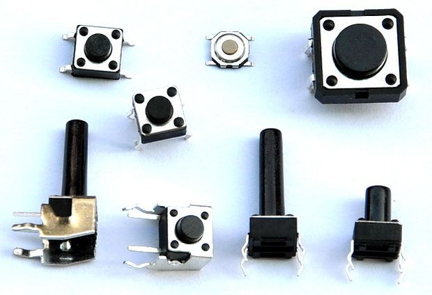

[Tutorial] How to use pushbutton with arduino to on/off LED
What is Arduino?
Arduino is an open source, computer hardware and software company, project, and user community that designs and manufactures microcontroller kits for building digital devices and interactive objects that can sense and control objects in the physical world. Basically you can use your input and output devices with arduino to have fun!!
Introduction
A pushbutton is basically a input device that connect the two points in a circuit when you pressed them. In this tutorial when a pushbutton is pressed the LED will gonna On and Off when you release the pushbutton.